Solution: The Village
Answer: NON-OBSIDIAN GEOMETRY
Written by AndrescuIII, kt3, lightbulbmeow, spacewalker
We are initially presented with a blank interface, and a “notification” that we can now Mine and Craft as skills. However, we do not have any materials in our inventory, and after convincing ourselves that this is not just the hunt organizers messing up, we may be prompted to look around the Overworld again.
Side to Side is an intended break-in, being the first puzzle in the hunt and not having much text in it. It has the word “cobblestone” in its flavortext, which is a material in Minecraft. Since we are now skilled in Mining, we try to “hold on” to the word, just as how we would mine in Minecraft, and cracks start to appear! After the mining animation is complete, we can now see the cobblestone in our inventory.
After taking “snow” from Lost in Translation, “sand” from May I Have A Silly Crossword?, “raw beef” from A Silly Crossword II, “wheat” from when the puzzle explains the joke in the video, “iron ore” from Superposition, and “log” from Cutting Onions, the mining part of this metapuzzle is complete.
Moving onto the crafting, some usual recipes work, and some don’t. For example, using the Crafting Table interface, from a log, we can make wood planks, and from those we can make a stick, but not a boat. Similarly, using the Furnace interface, we can place any wooden material for fuel and cook raw beef into steak.
The following materials can be made in a similar way as in Minecraft:
- iron ingot
- steak
- glass
- charcoal
- wood planks
- stick
- bread
- iron trapdoor
Now what? We have not used our feeders yet, so they might hold something important. We might soon realize that perhaps the next step is to craft these feeders. For example, we may try to make a DOUGHNUT using bread in all but the center cell… and we would be able to in this puzzle!
The following are the accepted recipes for each feeder.
| Puzzle | Answer | Recipe | Item Image |
|---|---|---|---|
| Side to Side | MONITOR | 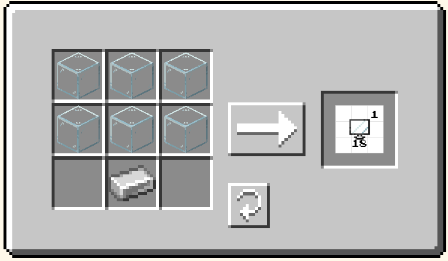 | 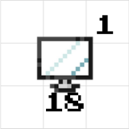 |
| Lost in Translation | HAMBURGER | 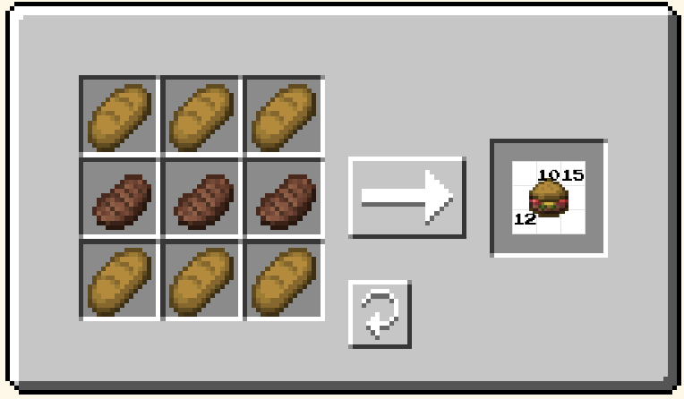 | 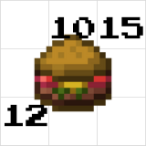 |
| May I Have A Silly Crossword? | DOUGHNUT | 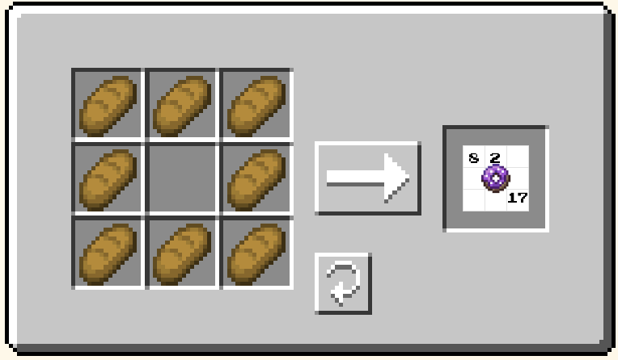 | 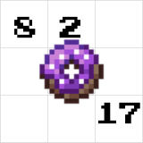 |
| A Silly Crossword II | TRASHBIN | 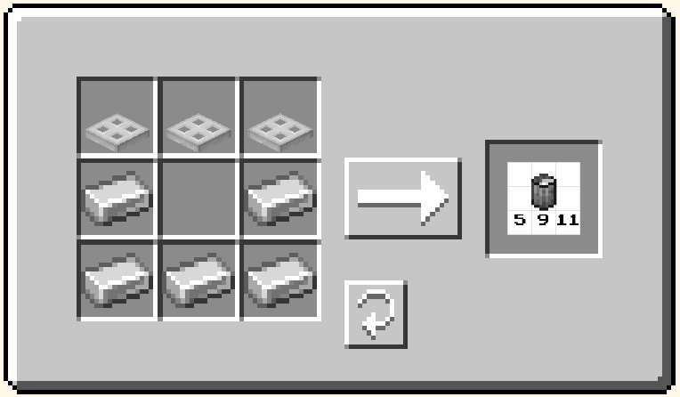 | 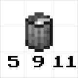 |
| when the puzzle explains the joke in the video | SCYTHE |  |
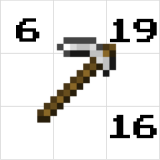 |
| Superposition | SNOWGLOBE | 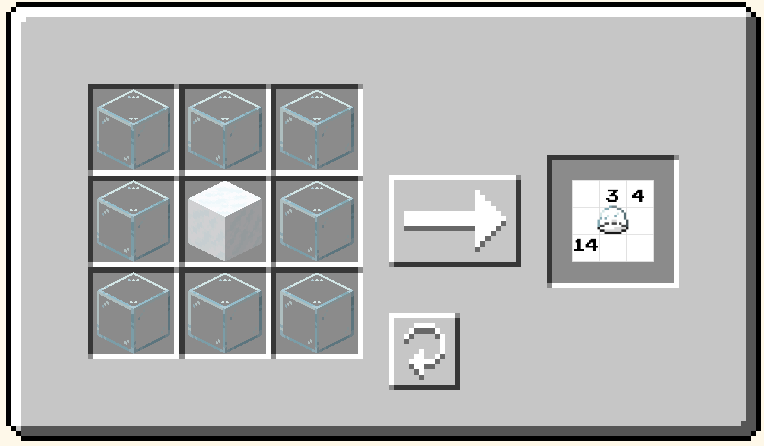 | 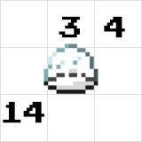 |
| Cutting Onions | FIREPLACE | 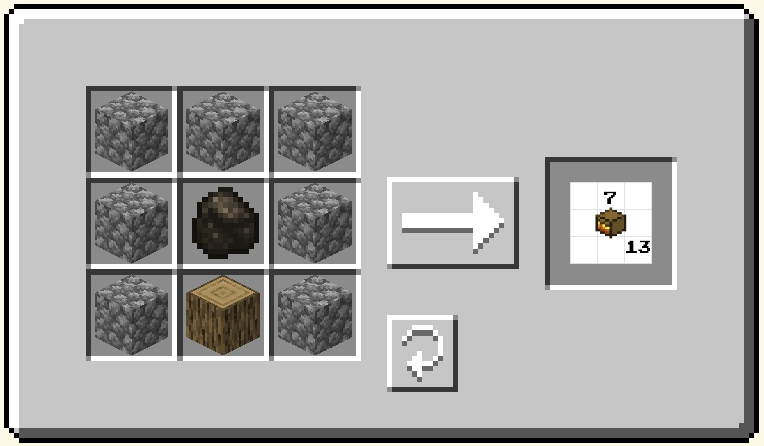 | 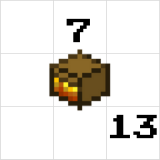 |
The Crafting Table also accepted iron ingot instead of iron trapdoor for the upper left and right of TRASHBIN and stone instead of log for the bottom middle of FIREPLACE.
The final insight is that the number of materials used to make a certain feeder is equal to its length. Realizing this early may also aid us in figuring out the recipe. Using this info, we can overlay letters onto our recipes in reading order, and assemble the answer using the given numbers in each image. They spell NON-OBSIDIAN GEOMETRY, the skill we need to get to the Nether with the limited materials we have.